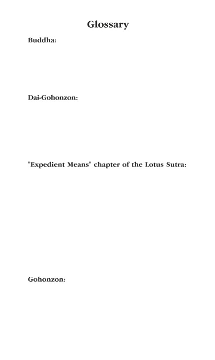

The Liturgy
of Nichiren Daishonin’s
Buddhism
©2004 SGI Canada
All Rights Reserved
10 9 8 7 6 5 4 3 2 1
Introduction
One of the most significant attributes of Nichiren
Daishonin’s Buddhism is its easily accessible practice
of chanting Nam-myoho-renge-kyo.This profound yet
simple method of Buddhist practice is the perfect
Buddhist teaching for the modern world.
Practice is one of the three pillars of Nichiren
Daishonin’s Buddhism, the others being faith and
study, through which we can bring forth our innate
Buddhahood. Practice entails two aspects, practice
for oneself and practice for others. Chanting Nam-
myoho-renge-kyo is the primary practice for oneself.
Nichiren Daishonin specified recitation of certain
portions of the Lotus Sutra as a vital supporting prac-
tice for oneself. Doing both the primary and sup-
porting practices each morning and evening gives
rise to maximum joy and benefit in our lives.
Nichiren Daishonin never gave specific instruc-
tions on the format for the sutra recitation. But he did
recommend reciting the “Expedient Means” (second)
and “Life Span of the Thus Come One” (sixteenth)
chapters of the Lotus Sutra, which are the heart of all
Buddhist teachings.
He taught that our existence is identical to the
universe as a whole and the universe as a whole is
identical to our existence. Each individual human life
is a microcosm of the life of the universe. We recite
the sutra and chant Nam-myoho-renge-kyo, the uni-
versal Law, so that our lives perfectly harmonize with
the universe. Carrying out these practices activates
the infinite power that the microcosm inherently
possesses. It transforms our fate, helping us to break
iii
through apparent deadlocks and convert sufferings
into happiness. It creates a transformation of our
inner realm, leaving us invigorated, refreshed and
positive. Through our primary and supporting prac-
tices we develop wisdom and compassion to lead
both ourselves and others to happiness.
Our twice-daily prayers establish a rhythm in our
lives, moving us toward happiness and harmony. By
making this consistent effort, we will attain perfect
unity with the universal Law and experience the state
of Buddhahood. Buddhism aims to make people free in
the most profound sense; its purpose is not to restrict
or constrain. Doing these daily prayers is a privilege,
not an obligation. Tenacious efforts are required, but
these are all for our own sake.To have great benefits or
develop a profound state of life, we should exert our-
selves accordingly.
As the language of the sutra is not English, people
often ask if there is truly any value in reciting some-
thing we cannot understand. Certainly there is value
in understanding the sutra’s meaning. In addition to
the translation found in the back of this booklet,
there are in-depth explanations available in various
SGI publications. Studying such material can help us
strengthen our understanding of and commitment to
the Law. But intellectual understanding without prac-
tice is of no use. Moreover, we cannot comprehend
the real depth of the teachings through reason alone.
Birds have their own language, their own speech.
People don’t understand it, but other birds do.There
are many examples among humans as well—codes,
jargon, or foreign languages are well understood by
experts or native speakers but unintelligible to others.
iv
and heartfelt thoughts while performing the prayers
that are important.
According to the principle of three thousand
realms in a single moment of life, our wholehearted
prayer is powerful enough to bring forth the protec-
tive forces innate in our lives and the environment.
The first prayer, preceded by chanting Nam-myoho-
renge-kyo three times, is offered only in the morning
before reciting the sutra. It expresses our apprecia-
tion for and empowers the functions of life and the
universe that serve to protect us as a result of our
Buddhist practice.
The second prayer expresses appreciation to the
Gohonzon, the true object of devotion; to Nichiren
Daishonin, the Buddha of the Latter Day of the Law;
and to Nikko Shonin, his immediate successor. For
practitioners of Nichiren Daishonin’s Buddhism,
these three represent the three treasures of
Buddhism: the Law, the Buddha and the Buddhist
Order, or community of believers, respectively. In
addition, we offer appreciation for Nichimoku
Shonin, Nikko’s successor, as representing practition-
ers who inherit the teaching into the future. In addi-
tion, we pray to repay our debts of gratitude to these
teachers. In Nichiren Daishonin’s Buddhism, repaying
such debts of gratitude means dedicating ourselves to
Buddhist practice and attaining enlightenment.
The third prayer is focused on the attainment of
kosen-rufu, the widespread propagation of the Mystic
Law, which will bring about peace in society and in
nature.We also pray for the continual advancement of
the SGI, which is the community of believers sharing
Nichiren Daishonin’s Buddhism throughout the
vi
world.We also express our appreciation for the three
founding presidents, for their example as leaders of
deep faith and commitment.
Our personal prayers are offered during the
fourth prayer, along with our determination to bring
forth Buddhahood and change our negative karma.
Our chanting of Nam-myoho-renge-kyo and recita-
tion of the sutra reach beyond the limits of time and
space and affect the life of the entire universe, as
indicated in our prayers for the deceased and prayers
for the happiness of all humanity.
The second, third and fourth prayers are offered
morning and evening at the conclusion of the sutra
recitation and chanting of Nam-myoho-renge-kyo.
vii
Pronunciation Guide
This book uses the Hepburn system of Romanization:
Vowels:
a
as in father
e
as in ten
i
as in machine
o
as in open
u
as in rule
ai
as in Thailand
ui
as in Louie
Consonants: g
as in get
j
as in joy
ts
as in bets
h
as in hello
y
as in yet
Rhythm
As a general rule, there is one Chinese character for
each beat, with the following exceptions:
shari-hotsu
(two beats)
hara-mitsu
(two beats)
Tone
Along with correct pronunciation and steady rhythm,
it is also important to maintain a stable tone, neither
raising nor lowering one’s pitch unnecessarily.
viii
Recitation of the Sutra
Recite the “Expedient Means” chapter excerpt
(pages 1-5).When completed, sound the bell. Recite
the excerpt from the verse section of the “Life Span
of the Thus Come One” chapter (pages 6-17). When
completed, sound the bell as you begin chanting
Nam-myoho-renge-kyo. Continue chanting for as long
as you wish.
When completed, sound the bell and chant Nam-
myoho-renge-kyo three times.Then offer the second,
third and fourth silent prayers, located at the back of
the book.
x
Myo ho ren ge kyo.
Hoben-pon. Dai ni.
Niji seson. Ju sanmai. Anjo
ni ki. Go shari-hotsu. Sho-
but chi-e. Jinjin muryo. Go
chi-e mon. Nange nannyu. Issai
shomon. Hyaku-shi-butsu. Sho
fu no chi. Sho-i sha ga. Butsu
zo shingon. Hyaku sen man noku.
1
Mushu sho butsu. Jin gyo
sho-butsu. Muryo doho. Yumyo
shojin. Myosho fu mon. Joju
jinjin. Mi-zo-u ho. Zui gi sho
setsu. Ishu nange. Shari-hotsu.
Go ju jo-butsu irai. Shuju innen.
Shuju hiyu. Ko en gonkyo. Mu
shu hoben. Indo shujo. Ryo ri
sho jaku. Sho-i sha ga. Nyorai
2
hoben. Chi-ken hara-mitsu. Kai
i gu-soku. Shari-hotsu. Nyorai
chi-ken. Kodai jinnon. Muryo
muge. Riki. Mu-sho-i. Zenjo.
Gedas. Sanmai. Jin nyu musai.
Joju issai. Mi-zo-u ho. Shari-
hotsu. Nyorai no. Shuju fun-
betsu. Gyo ses sho ho. Gon-
ji nyunan. Ekka shushin. Shari-
3
hotsu. Shu yo gon shi. Muryo
muhen. Mi-zo-u ho. Bus shitsu
joju. Shi shari-hotsu. Fu shu bu
setsu. Sho-i sha ga. Bus sho
joju. Dai ichi ke-u. Nange shi
ho. Yui butsu yo butsu. Nai no
kujin. Shoho jisso.
Sho-i shoho. Nyo ze so.
Nyo ze sho. Nyo ze tai.
4
Nyo ze riki. Nyo ze sa.
Nyo ze in. Nyo ze en.
Nyo ze ka. Nyo ze ho.
Nyo ze honmak kukyo to.
(Recite the section from "Sho-i shoho"
to "Nyo ze honmak kukyo to"
three times.)
5
Myo ho ren ge kyo.
Nyorai ju-ryo-hon. Dai ju-roku.
Ji ga toku bur rai.
Sho kyo sho kosshu.
Muryo hyaku sen man.
Oku sai asogi.
Jo seppo kyoke.
Mushu oku shujo.
6
Ryo nyu o butsu-do.
Nirai muryo ko.
I do shujo ko.
Hoben gen nehan.
Ni jitsu fu metsu-do.
Jo ju shi seppo.
Ga jo ju o shi.
I sho jin-zu-riki.
Ryo tendo shujo.
7
Sui gon ni fu ken.
Shu ken ga metsu-do.
Ko kuyo shari.
Gen kai e renbo.
Ni sho katsu-go shin.
Shujo ki shin-buku.
Shichi-jiki i nyunan.
Isshin yok ken butsu.
Fu ji shaku shinmyo.
8
Ji ga gyu shuso.
Ku shutsu ryojusen.
Ga ji go shujo.
Jo zai shi fu-metsu.
I ho-ben-rik ko.
Gen u metsu fu-metsu.
Yo-koku u shujo.
Kugyo shingyo sha.
Ga bu o hi chu.
9
I setsu mujo ho.
Nyoto fu mon shi.
Tan ni ga metsu-do.
Ga ken sho shujo.
Motsu-zai o kukai.
Ko fu i gen shin.
Ryo go sho katsu-go.
In go shin renbo.
Nai shutsu i seppo.
10
Jin-zu-riki nyo ze.
O asogi ko.
Jo zai ryojusen.
Gyu yo sho jusho.
Shujo ken ko jin.
Dai ka sho sho ji.
Ga shi do annon.
Tennin jo juman.
Onrin sho do-kaku.
11
Shuju ho shogon.
Hoju ta keka.
Shujo sho yu-raku.
Shoten gyaku tenku.
Jo sas shu gi-gaku.
U mandara ke.
San butsu gyu daishu.
Ga jodo fu ki.
Ni shu ken sho jin.
12
Ufu sho kuno.
Nyo ze shitsu juman.
Ze sho zai shujo.
I aku-go innen.
Ka asogi ko.
Fu mon sanbo myo.
Sho u shu ku-doku.
Nyuwa shichi-jiki sha.
Sokkai ken gashin.
13
Zai shi ni seppo.
Waku-ji i shi shu.
Setsu butsu-ju muryo.
Ku nai ken bussha.
I setsu butsu nan chi.
Ga chi-riki nyo ze.
Eko sho muryo.
Jumyo mushu ko.
Ku shugo sho toku.
14
Nyoto u chi sha.
Mot to shi sho gi.
To dan ryo yo jin.
Butsu-go jip puko.
Nyo i zen hoben.
I ji o shi ko.
Jitsu zai ni gon shi.
Mu no sek komo.
Ga yaku i se bu.
15
Ku sho kugen sha.
I bonbu tendo.
Jitsu zai ni gon metsu.
I joken ga ko.
Ni sho kyoshi shin.
Ho-itsu jaku go-yoku.
Da o aku-do chu.
Ga jo chi shujo.
Gyo do fu gyo do.
16
Zui o sho ka do.
I ses shuju ho.
Mai ji sa ze nen.
I ga ryo shujo.
Toku nyu mu-jo do.
Soku joju busshin.
17
I offer my deepest praise and most sincere
gratitude to the Dai-Gohonzon of the Three
Great Secret Laws, which was bestowed
upon the entire world.
I offer my deepest praise and most sincere
gratitude to Nichiren Daishonin, the Bud-
dha of the Latter Day of the Law.
I offer my deepest praise and most sincere
gratitude to Nikko Shonin.
I offer sincere gratitude to Nichimoku Shonin.
Chant Nam-myoho-renge-kyo three times.
I pray that the great desire for kosen-rufu
be fulfilled, and that the Soka Gakkai
International develop eternally in this
endeavour.
I offer my most sincere gratitude to the
three founding presidents, Tsunesaburo
Makiguchi, Josei Toda, and Daisaku Ikeda,
for their eternal example of selfless dedica-
tion to the propagation of the Law.
Chant Nam-myoho-renge-kyo three times.
18
FOURTH SILENT PRAYER
Personal Prayers and
Prayer for the Deceased
I pray to bring forth Buddhahood from
within my life, change my karma and fulfill
my wishes in the present and the future.
(Offer additional prayers here.)
I pray for my deceased relatives and for all
those who have passed away, particularly
for these individuals: (Sound the bell con-
tinuously while offering prayers.)
Chant Nam-myoho-renge-kyo three times.
I pray for peace throughout the world and
the happiness of all humanity.
Sound the bell and chant Nam-myoho-
renge-kyo three times to conclude (group
chants in unison).
19
At that time the World-Honoured One calmly arose
from his samadhi and addressed Shariputra, saying:
“The wisdom of the Buddhas is infinitely profound
and immeasurable. The door to this wisdom is diffi-
cult to understand and difficult to enter. Not one of
the voice-hearers or pratyekabuddhas is able to com-
prehend it.
“What is the reason for this? A Buddha has per-
sonally attended a hundred, a thousand, ten thou-
sand, a million, a countless number of Buddhas and
has fully carried out an immeasurable number of reli-
gious practices. He has exerted himself bravely and
vigorously, and his name is universally known. He has
realized the Law that is profound and never known
before, and preaches it in accordance with what is
appropriate, yet his intention is difficult to under-
stand.
“Shariputra, ever since I attained Buddhahood I
have through various causes and various similes
widely expounded my teachings and have used
countless expedient means to guide living beings
and cause them to renounce their attachments.Why
is this? Because the Thus Come One is fully pos-
sessed of both expedient means and the paramita of
wisdom.
“Shariputra, the wisdom of the Thus Come One is
expansive and profound. He has immeasurable
[mercy], unlimited [eloquence], power, fearlessness,
concentration, emancipation, and samadhis, and has
20
deeply entered the boundless and awakened to the
Law never before attained.
“Shariputra, the Thus Come One knows how to
make various kinds of distinctions and to expound
the teachings skillfully. His words are soft and gentle
and can delight the hearts of the assembly.
“Shariputra, to sum it up: the Buddha has fully
realized the Law that is limitless, boundless, never
attained before.
“But stop, Shariputra, I will say no more. Why?
Because what the Buddha has achieved is the rarest
and most difficult-to-understand Law.The true entity
of all phenomena can only be understood and shared
between Buddhas.This reality consists of the appear-
ance, nature, entity, power, influence, inherent cause,
relation, latent effect, manifest effect, and their con-
sistency from beginning to end.”
Chapter 16: The Life Span
of the Thus Come One
Since I attained Buddhahood
the number of kalpas that have passed
is an immeasurable hundreds, thousands, ten
thousands,
millions, trillions, asamkhyas.
Constantly I have preached the Law, teaching,
converting
countless millions of living beings,
causing them to enter the Buddha way,
all this for immeasurable kalpas.
In order to save living beings,
as an expedient means I appear to enter nirvana
21
but in truth I do not pass into extinction.
I am always here, preaching the Law.
I am always here,
but through my transcendental powers
I make it so that living beings in their befuddlement
do not see me even when close by.
When the multitude see that I have passed into
extinction,
far and wide they offer alms to my relics.
All harbour thoughts of yearning
and in their minds thirst to gaze at me.
When living beings have become truly faithful,
honest and upright, gentle in intent,
single-mindedly desiring to see the Buddha,
not hesitating even if it costs them their lives,
then I and the assembly of monks
appear together on Holy Eagle Peak.
At that time I tell the living beings
that I am always here, never entering extinction,
but that because of the power of an expedient
means
at times I appear to be extinct, at other times not,
and that if there are living beings in other lands
who are reverent and sincere in their wish to believe,
then among them too
I will preach the unsurpassed Law.
But you have not heard of this,
so you suppose that I enter extinction.
When I look at living beings
I see them drowned in a sea of suffering;
therefore I do not show myself,
causing them to thirst for me.
Then when their minds are filled with yearning,
22
at last I appear and preach the Law for them.
Such are my transcendental powers.
For asamkhya kalpas
constantly I have dwelled on Holy Eagle Peak
and in various other places.
When living beings witness the end of a kalpa
and all is consumed in a great fire,
this, my land, remains safe and tranquil,
constantly filled with heavenly and human beings.
The halls and pavilions in its gardens and groves
are adorned with various kinds of gems.
Jeweled trees abound in flowers and fruit
where living beings enjoy themselves at ease.
The gods strike heavenly drums,
constantly making many kinds of music.
Mandarava blossoms rain down,
scattering over the Buddha and the great assembly.
My pure land is not destroyed,
yet the multitude see it as consumed in fire,
with anxiety, fear and other sufferings
filling it everywhere.
These living beings with their various offences,
through causes arising from their evil actions,
spend asamkhya kalpas
without hearing the name of the Three Treasures.
But those who practise meritorious ways,
who are gentle, peaceful, honest and upright,
all of them will see me
here in person, preaching the Law.
At times for this multitude
I describe the Buddha’s life span as immeasurable,
and to those who see the Buddha only after a
long time
23
I explain how difficult it is to meet the Buddha.
Such is the power of my wisdom
that its sagacious beams shine without measure.
This life span of countless kalpas
I gained as the result of lengthy practice.
You who are possessed of wisdom,
entertain no doubts on this point!
Cast them off, end them forever,
for the Buddha’s words are true, not false.
He is like a skilled physician
who uses an expedient means to cure his
deranged sons.
Though in fact alive, he gives out word he is dead,
yet no one can say he speaks falsely.
I am the father of this world,
saving those who suffer and are afflicted.
Because of the befuddlement of ordinary people,
though I live, I give out word I have entered
extinction.
For if they see me constantly,
arrogance and selfishness arise in their minds.
Abandoning restraint, they give themselves up to
the five desires
and fall into the evil paths of existence.
Always I am aware of which living beings
practise the way, and which do not,
and in response to their needs for salvation
I preach various doctrines for them.
At all times I think to myself:
How can I cause living beings
to gain entry into the unsurpassed way
and quickly acquire the body of a Buddha?
24

“Enlightened One.” One who correctly per-
ceives the true nature of all phenomena and leads
others to attain Buddhahood. This Buddha nature
exists in all beings and is characterized by the quali-
ties of wisdom, courage, compassion and life force.
The object of devotion that Nichiren
Daishonin inscribed at Minobu, Japan, on October 12,
1279, and which he referred to as the purpose of his
advent. It is the Dai-Gohonzon that represents his
intent for the widespread propagation of the Law. Dai-
Gohonzon literally means the great object of devotion.
The second of the twenty-eight chapters of the Lotus
Sutra, in which Shakyamuni Buddha reveals that the
purpose of a Buddha’s advent in the world is to lead
all people to enlightenment. Shakyamuni shows that
all people have the potential for Buddhahood.This is
the principal chapter of the theoretical teaching
(first half) and one of the two pivotal chapters of the
entire sutra, the other being the “Life Span of the
Thus Come One” (sixteenth) chapter, the core of the
essential teaching (latter half).
The object of devotion. It is the embod-
iment of the Law of Nam-myoho-renge-kyo, express-
ing the life-state of Buddhahood, which all people
inherently possess. Go means worthy of honour and
honzon means an object of fundamental respect.
25
kosen-rufu: Wide propagation, or wide proclama-
tion and propagation. It is a term from the Lotus
Sutra that literally means to declare and spread wide-
ly — Shakyamuni Buddha’s injunction to his follow-
ers. The spread of the essence of the Lotus Sutra,
Nam-myoho-renge-kyo, will bring about peace and
happiness in the world.
Nam-myoho-renge-kyo: The name of the funda-
mental law of life and the universe expounded in
Nichiren Daishonin’s Buddhism.The literal meaning
is: Nam
(devotion), the action of practising
Buddhism; myoho (Mystic Law), the essential law of
life and its phenomenal manifestations; renge
(lotus), the simultaneity of cause and effect; kyo
(sutra), the truth expressed through the sound of
one’s voice.
Nichimoku Shonin (1260-1333): The chief priest
of Taiseki-ji temple in Japan who inherited the teach-
ings from Nikko Shonin, Nichiren Daishonin’s imme-
diate successor. Known for his excellence at doctrinal
debate and his numerous remonstrations with the
government authorities, urging them to heed Nichiren
Daishonin’s teachings.
Nichiren Daishonin (1222-1282): The founder of
the Buddhism upon which the SGI bases its activities for
peace and happiness in the world. He established the
chanting of Nam-myoho-renge-kyo to the Gohonzon as
the universal practice for attaining enlightenment. The
name Nichiren means sun lotus, and Daishonin is an
honorific title that means great sage.
26